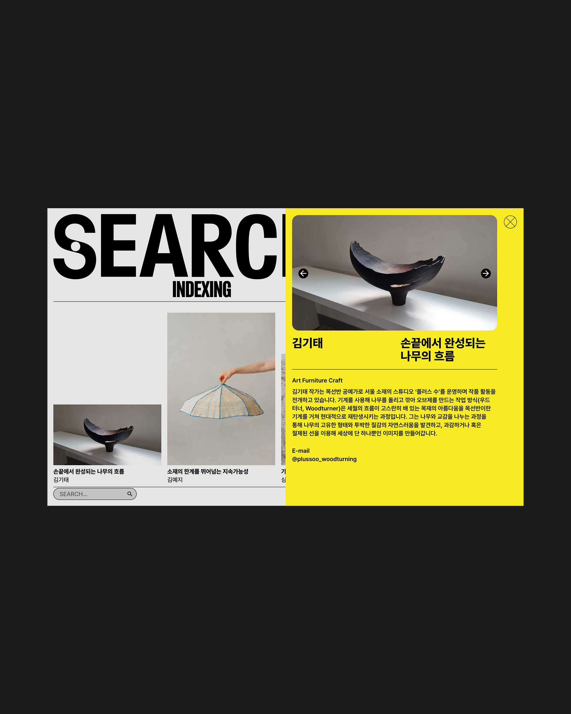
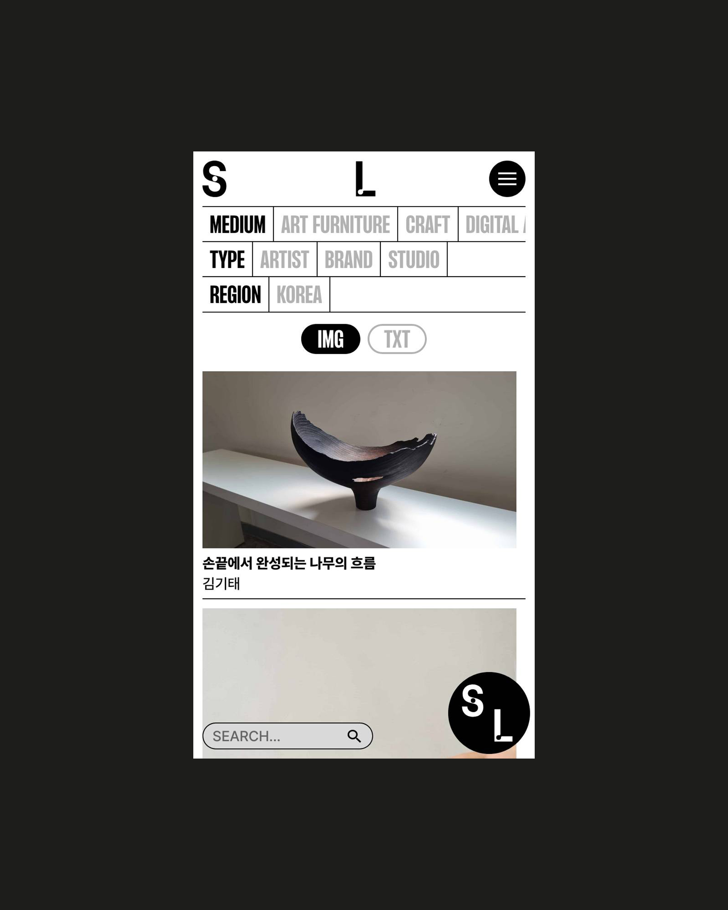
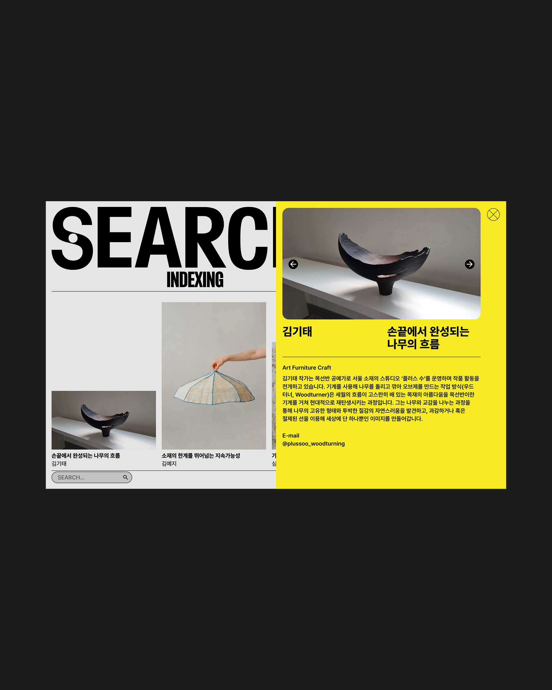
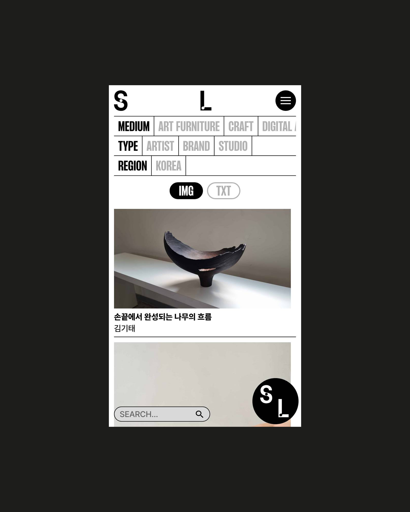
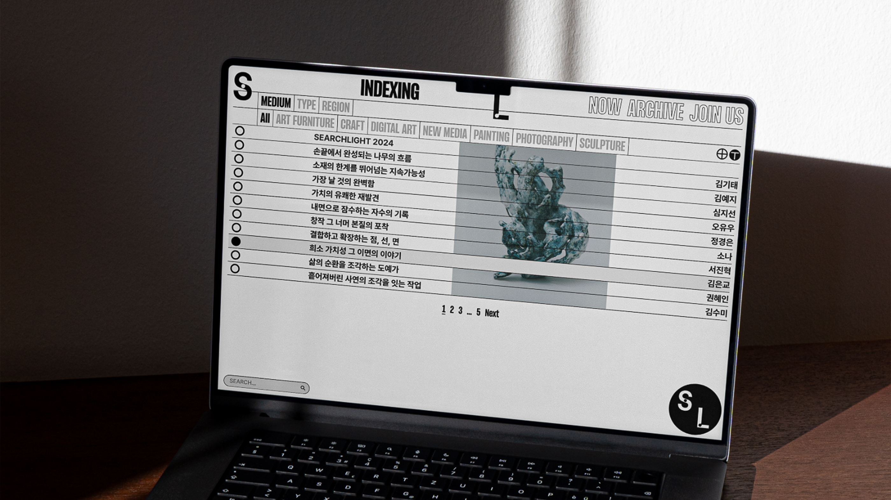
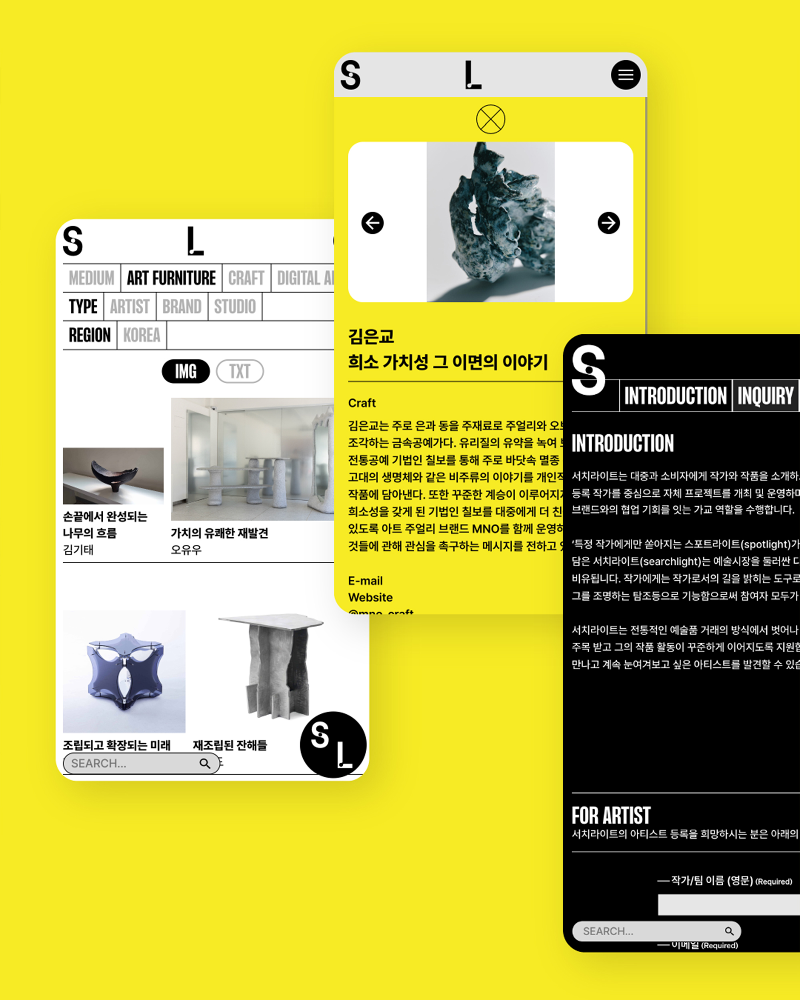
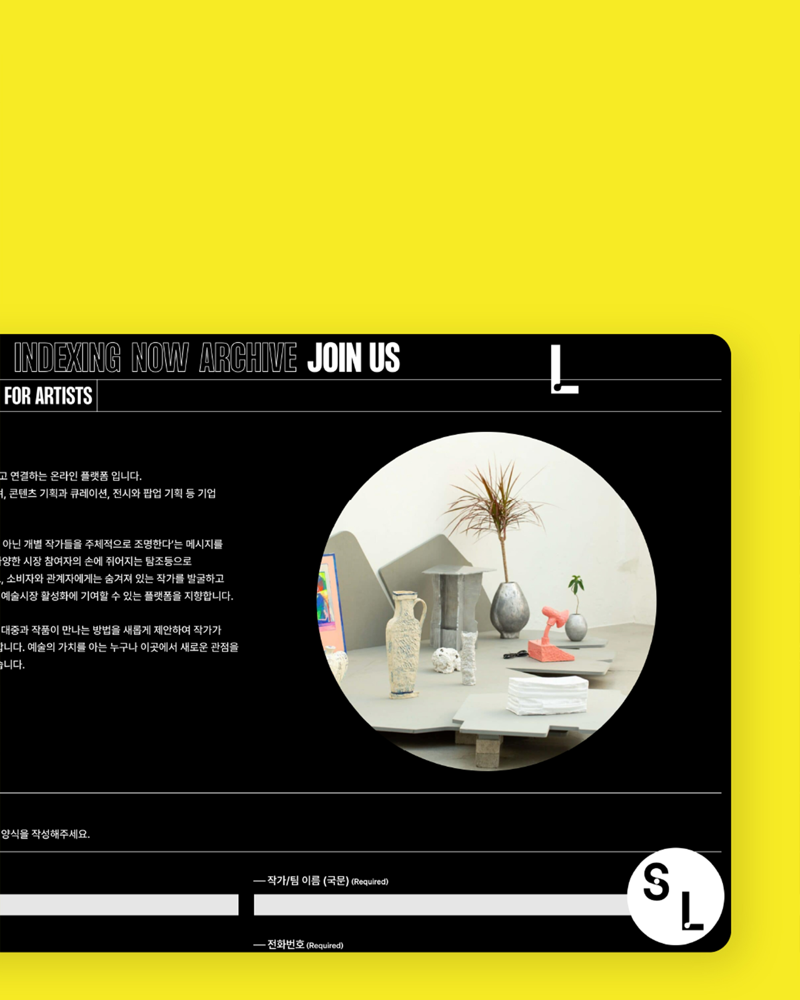
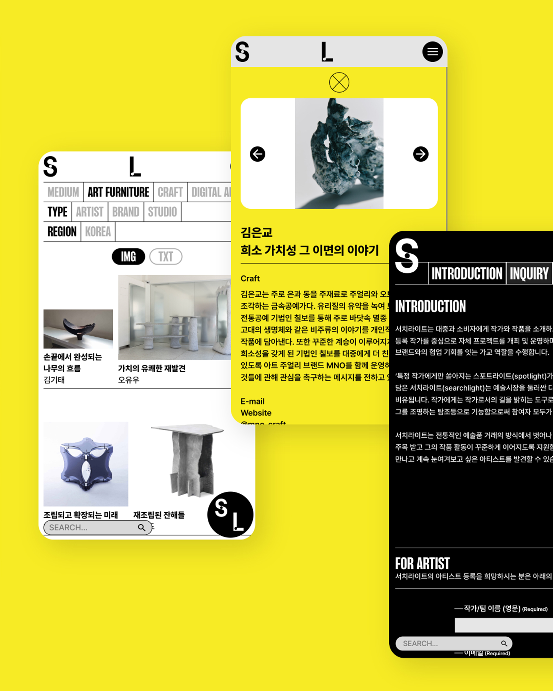
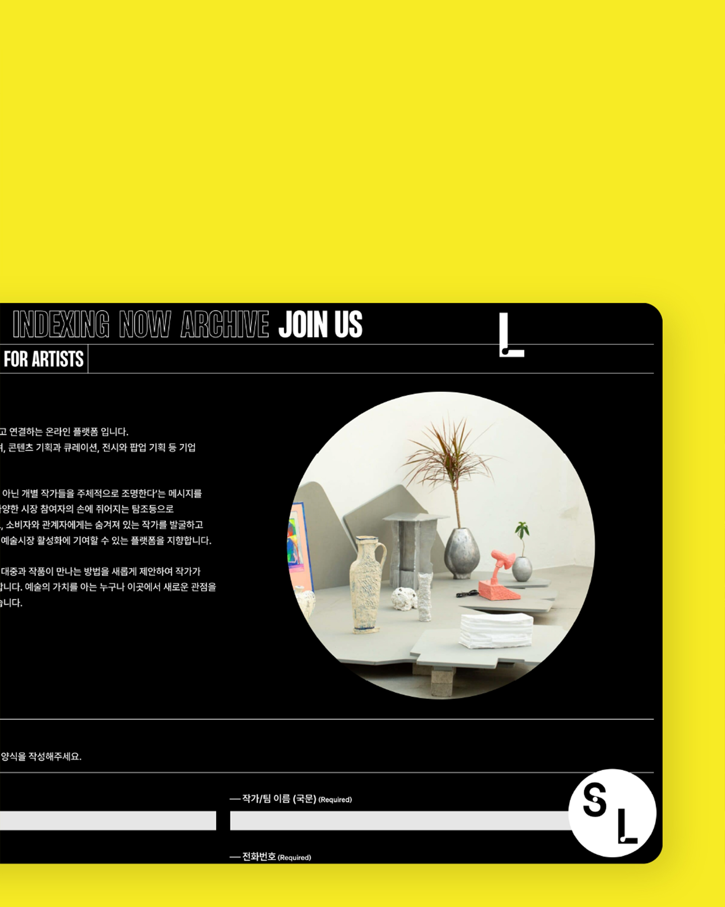

Searchlight is a collaborative platform formed by designers, artists, and activists, dedicated to shedding light on social issues through cultural projects. Everyday Practice designed and developed both the brand identity and website to reflect this collective vision. The identity is built from a strong typographic system and minimal graphic elements, with a monochrome palette that keeps the focus on featured projects. Notably, the rotating icon in the lower right corner of the website symbolizes the spirit of collaboration and circulation among creative practitioners — a visual metaphor for Searchlight’s ethos of shared practice and ongoing dialogue.
 






 


